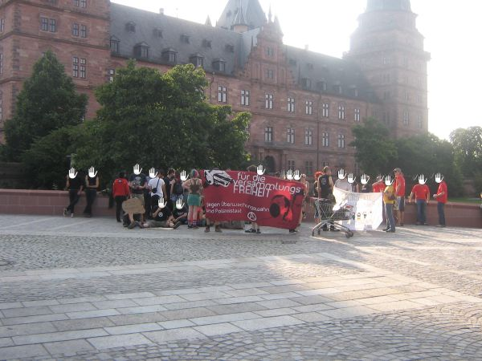
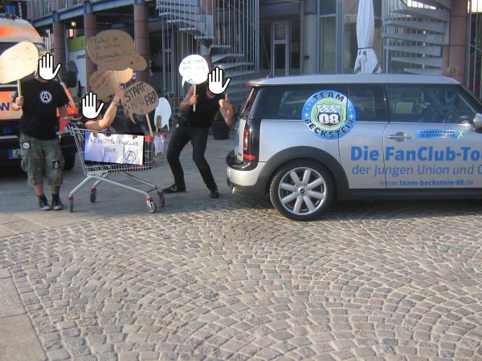

<!DOCTYPE html PUBLIC "-//W3C//DTD XHTML 1.0 Transitional//EN" "http://www.w3.org/TR/xhtml1/DTD/xhtml1-transitional.dtd">
<html xmlns="http://www.w3.org/1999/xhtml">

<head profile="http://gmpg.org/xfn/11">
	<title>Kundgebung zum Becksteinbesuch &laquo; auszeitnews</title>
	<meta http-equiv="Content-Type" content="text/html; charset=UTF-8" />
	<meta name="generator" content="WordPressMU, WP 1.5.1.2" /> 
	<meta name="template" content="K2 RC5" />
 	<meta name="description" content="" />

	

	<link rel="stylesheet" type="text/css" media="screen" href="http://blogsport.de/wp-inst/wp-content/sitetemplates/k2_final/css/style.css.php" />
	<link rel="stylesheet" type="text/css" media="screen" href="http://blogsport.de/wp-inst/wp-content/sitetemplates/k2_final/css/blogsport.css.php" />
	<link rel="stylesheet" type="text/css" media="print" href="http://blogsport.de/wp-inst/wp-content/sitetemplates/k2_final/css/print.css.php" />
		<link rel="stylesheet" type="text/css" media="screen" href="../../../../templates/wp-layout.css" />

	<link rel="alternate" type="application/rss+xml" title="RSS 2.0" href="../../../../feed/index.html" />
	<link rel="alternate" type="text/xml" title="RSS .92" href="../../../../feed/rss/index.html" />
	<link rel="alternate" type="text/xml" title="RDF" href="../../../../feed/rdf/index.html" />
	<link rel="alternate" type="application/atom+xml" title="Atom 0.3" href="../../../../feed/atom/index.html" />

	<link rel="pingback" href="../../../../xmlrpc.html" />
	<script type="text/javascript" src="http://blogsport.de/plugins/k2_final/jquery.js.php"></script>
	<script type="text/javascript" src="http://blogsport.de/plugins/k2_final/k2.functions.js.php"></script>
	<script type="text/javascript" src="http://blogsport.de/plugins/k2_final/k2.slider.js.php"></script>
	<script type="text/javascript" src="http://blogsport.de/plugins/k2_final/k2.trimmer.js.php"></script>

	<meta name="viewport" content="user-scalable=yes, width=device-width, initial-scale=1.0, minimum-scale=1" />
	<script type="text/javascript" src="../../../../../blogsport.de/wp-content/sitetemplates/k2_final/js/jquery.browser.min.js"></script>					<script type="text/javascript" src="../../../../../blogsport.de/plugins/k2_final/k2.rollingarchives.js"></script>
					<link rel="stylesheet" type="text/css" media="screen" href="../../../../../blogsport.de/wp-content/sitetemplates/k2_final/css/rollingarchives.css" />
	<script type="text/javascript" src="../../../../../blogsport.de/plugins/k2_final/k2.livesearch.js"></script>
	<script type="text/javascript">
	//<![CDATA[
		var $ = jQuery.noConflict();

		K2.columns = 2;

		K2.layoutWidths = [528, 780, 950];

		$(document).ready(dynamicColumns);
		$(window).resize(dynamicColumns);

		
				$(document).ready(function(){
						K2.LiveSearch = new LiveSearch(
				"../../../../wp-includes/themes/k2_final/rollingarchive.html",
				"Type and Wait to Search"
			);
			
						K2.RollingArchives = new RollingArchives(
				"../../../../plugins/k2_final/theloop.html",
				"Seite %1$d von %2$d"
			);
					});
		
		
		
	//]]>
	</script>
		<style type="text/css">
				#header {
			background-image: url("../../../../images/headers/header%20Kopie.jpg");
		}
				body {
			background-color: #F0F8FF;
		}
				#header h1, #header .description {
			display: none;
		}
				</style>
			<link rel='stylesheet' class="respmenu" data-href='http://blogsport.de/wp-content/sitetemplates/k2_final/wprmenu/wprmenu.min.css' type='text/css' media='screen' />
	<link rel='stylesheet' class="respmenu" data-href='//fonts.googleapis.com/css?family=Open+Sans%3A400%2C300%2C600&#038;ver=4.0' type='text/css' media='all' />
		<script>
		    var mobile =  window.matchMedia('screen and (max-width: 487px)').matches; 			var onecolumn = window.matchMedia('screen and (max-width: '+( K2.layoutWidths[1] - 1 )+'px)').matches;
			var responsive = window.matchMedia('screen and (max-width: '+( K2.layoutWidths[0] - 1 )+'px)').matches;

			if (mobile) {
				$.getScript('../../../../../pagead2.googlesyndication.com/pagead/js/f.txt');
				(adsbygoogle = window.adsbygoogle || []).push({ google_ad_client: "ca-pub-3213363904178661", enable_page_level_ads: true });
			}
			else {

				var googletag = googletag || {};
				googletag.cmd = googletag.cmd || [];
				(function() {
				var gads = document.createElement('script');
				gads.async = true;
				gads.type = 'text/javascript';
				var useSSL = 'https:' == document.location.protocol;
				gads.src = (useSSL ? 'https:' : 'http:') +
				'//www.googletagservices.com/tag/js/gpt.js';
				var node = document.getElementsByTagName('script')[0];
				node.parentNode.insertBefore(gads, node);
				})();

				googletag.cmd.push(function() { 
					var mapping = googletag.sizeMapping()
					.addSize([254, 200], [234, 60])
					.addSize([320, 200], [320, 50])
										.addSize([480, 280], [468, 60])
										.build();

					googletag.defineSlot('/1035384/468x60_default', [468, 60], 'div-googlead')
						.defineSizeMapping(mapping).setCollapseEmptyDiv(true).addService(googletag.pubads());

					
			    	googletag.pubads().set('adsense_channel_ids', '5666256636+5144645237+4036610739');
			    						googletag.pubads().addEventListener('slotRenderEnded', function(event) {
					   if (!event.isEmpty) $('.advert').prepend('<span>Anzeige</span>');
					});
					googletag.enableServices();
				});
			}
		</script>

		<link rel='archives' title='Februar 2009' href='../../../../2009/02/index.html' />
	<link rel='archives' title='Januar 2009' href='../../../../2009/01/index.html' />
	<link rel='archives' title='Dezember 2008' href='../../../12/index.html' />
	<link rel='archives' title='November 2008' href='../../../11/index.html' />
	<link rel='archives' title='Oktober 2008' href='../../../10/index.html' />
	<link rel='archives' title='September 2008' href='../../../09/index.html' />
	<link rel='archives' title='August 2008' href='../../index.html' />
	<link rel='archives' title='Juli 2008' href='../../../07/index.html' />
	<link rel='archives' title='Juni 2008' href='../../../06/index.html' />
	<link rel='archives' title='Mai 2008' href='../../../05/index.html' />
	<link rel='archives' title='April 2008' href='../../../04/index.html' />
	<link rel='archives' title='M&auml;rz 2008' href='../../../03/index.html' />
	<link rel='archives' title='Februar 2008' href='../../../02/index.html' />
	<link rel='archives' title='Januar 2008' href='../../../01/index.html' />
	<link rel='archives' title='Dezember 2007' href='../../../../2007/12/index.html' />
	<link rel='archives' title='November 2007' href='../../../../2007/11/index.html' />
	<link rel='archives' title='Oktober 2007' href='../../../../2007/10/index.html' />
	<link rel='archives' title='September 2007' href='../../../../2007/09/index.html' />
	<link rel='archives' title='August 2007' href='../../../../2007/08/index.html' />
	<link rel='archives' title='Juli 2007' href='../../../../2007/07/index.html' />
	<link rel='archives' title='Juni 2007' href='../../../../2007/06/index.html' />
	<link rel='archives' title='Mai 2007' href='../../../../2007/05/index.html' />
	<link rel='archives' title='April 2007' href='../../../../2007/04/index.html' />
	<link rel='archives' title='M&auml;rz 2007' href='../../../../2007/03/index.html' />
	<link rel='archives' title='Februar 2007' href='../../../../2007/02/index.html' />
	<link rel='archives' title='Januar 2007' href='../../../../2007/01/index.html' />
	<link rel='archives' title='Dezember 2006' href='../../../../2006/12/index.html' />
	<link rel='archives' title='November 2006' href='../../../../2006/11/index.html' />
	<link rel='archives' title='Oktober 2006' href='../../../../2006/10/index.html' />
	<link rel='archives' title='September 2006' href='../../../../2006/09/index.html' />
	<link rel='archives' title='Mai 2006' href='../../../../2006/05/index.html' />
	<link rel='archives' title='April 2006' href='../../../../2006/04/index.html' />
	<link rel='archives' title='M&auml;rz 2006' href='../../../../2006/03/index.html' />
	<link rel='archives' title='Februar 2006' href='../../../../2006/02/index.html' />
	<link rel='archives' title='Januar 2006' href='../../../../2006/01/index.html' />
	<link rel='archives' title='Dezember 2005' href='../../../../2005/12/index.html' />
	<link rel='archives' title='November 2005' href='../../../../2005/11/index.html' />
	<link rel='archives' title='Oktober 2005' href='../../../../2005/10/index.html' />
	<link rel='archives' title='Juni 2005' href='../../../../2005/06/index.html' />
	<link rel='archives' title='Mai 2005' href='../../../../2005/05/index.html' />
	<link rel='archives' title='April 2005' href='../../../../2005/04/index.html' />
	<link rel='archives' title='M&auml;rz 2005' href='../../../../2005/03/index.html' />
	<link rel='archives' title='September 2003' href='../../../../2003/09/index.html' />
	<link rel='archives' title='Juni 2003' href='../../../../2003/06/index.html' />

</head>

<body class="wordpress k2 y2021 m02 d02 h23 single postid-148 s-author- default columns-two lang-de">

<a class="skiplink" href="#startcontent" accesskey="2">Zum Inhalt springen</a>

<div id="page">

	<div id="header">

		<h1><a href="../../../../index.html" title="auszeitnews" accesskey="1">auszeitnews</a></h1>
		<p class="description"></p>

		<ul class="menu">
			<li class="current_page_item"><a href="../../../../index.html" title="News">News</a></li>
			


<li class="page-item-11 page_item"><a href="../../../../termine/index.html" title="Termine">Termine</a></li>
<li class="page-item-16 page_item"><a href="../../../../links/index.html" title="Links">Links</a></li>
<li class="page-item-14 page_item"><a href="../../../../kontakt/index.html" title="Kontakt">Kontakt</a></li>
<li class="page-item-45 page_item"><a href="../../../../texte/index.html" title="Infos">Infos</a></li>

						
		</ul>
	
	</div>

	<hr />

	<div class="content">

	   <div id="primary">
		<div id="notices"></div>
		<a name="startcontent" id="startcontent"></a>

				<div id="current-content" class="hfeed">

			

	
			<div class="navigation">
			<div class="left"><span>&laquo;</span> <a href="../../04/hausbesetzung-in-frankfurt/index.html">Hausbesetzung in Frankfurt</a></div>
			<div class="right"><a href="../../../09/01/buendnis-gegen-rechts-npd-nutzt-wahlkampfauftritt-in-aschaffenburg-zu-gewalttaetigen-uebergriffen/index.html">Bündnis gegen Rechts: „NPD nutzt Wahlkampfauftritt in Aschaffenburg zu gewalttätigen Übergriffen“</a> <span>&raquo;</span></div>
			<div class="clear"></div>
		</div>
	
		<div id="post-148" class="hentry p0  publish author-administrator category-regional y2008 m08 d17 h23">

		<div class="entry-head">
			<h3 class="entry-title"><a href="index.html" rel="bookmark" title='Permanent Link zu "Kundgebung zum Becksteinbesuch"'>Kundgebung zum Becksteinbesuch</a></h3>
						<div class="entry-meta">
				<span class="meta-start"></span><div class="entry-date"><abbr class="published" title="2008-08-17T22:23:21+0000">17. August 2008</abbr></div> <div class="entry-categories"><span class="meta-prep">in</span> <a href="../../../../category/regional/index.html" title="Alle Beitr&auml;ge in regional ansehen">regional</a></div><span class="meta-end"></span>
				
				
							</div> <!-- .entry-meta -->
		</div> <!-- .entry-head -->
		<div class="entry-content">
			<p><a href="../../../../texte/pressemitteilung-ak-versammlungsfreiheit/index.html">2. Pressemitteilung des AK VersammlungsFREIHEIT</a></p>
<p>Heute versammelten sich insgesamt etwa 70 Personen, um bei einer Wahlkampfveranstaltung der CSU gegen das neue bayerische Versammlungsgesetz zu protestieren.<br />
Gegen 18 Uhr fanden sich ca. 40 Personen auf dem Marktplatz ein und eröffneten die Kundgebung mit einem Redebeitrag der Anarchistischen Gruppe Aschaffenburg. Zu diesem Zeitpunkt war noch nicht viel vom Wahlkampfzirkus zu sehen, dafür einige Streifenbeamte und Zivis, die Bereitschaft hielt sich vor (oder im?) Schlappeseppel auf.<br />
<br />
<em>Beginn der Kundgebung</em></p>
<p>Die Menge wuchs im Laufe der Zeit noch kräftig an, es folgten Redebeiträge zu den Themen Versammlungsfreiheit und Becksteins Politik.<br />
In der Zwischenzeit fuhr das &#8222;Team Beckstein&#8220; der JU vor, was einige Teilnehmer spontan zum Bau eines &#8222;Freiheits-Fanclub Tour&#8220;-Gefährts veranlasste, welches einige Runden für die Kameras der anwesenden Journalisten über den Platz drehte. Die bis dato recht freundlichen Uniformierten gaben sich großzügig, konnten es sich aber nicht verkneifen, darauf hinzuweisen, dass gerade ein nicht genehmigter Umzug stattfand und man die Leute und den Anmelder der Kundgebung jetzt mitnehmen könnte. Wenn man nicht so freundlich wäre&#8230;<br />
In der Zwischenzeit enttarnten sich noch 2 Zivis. Der eine wurde von einer aufgebrachten Frau beschuldigt, ihre Bankkarte gestohlen zu haben und musste von seinen uniformierten Kollegen unterstützt werden. Kann man sich ja mal für die Zukunft merken.<br />
<br />
<em>Freiheits-Fanclub Tour</em></p>
<p>Gegen 19 uhr wurde der letzte Redebeitrag verlesen, die Kundgebung war durch die Auflagen spätestens um 19:15 Uhr aufzulösen. Eine merkwürdige Auflage, ursprünglich sollte die Kundgebung bis 19:30 Uhr durchgeführt werden. Das Gerücht machte die Runde, dass genau zu diesem Zeitpunkt Becksteins Tourbus auf dem Schloßplatz einfahren solle. Alles klar,  Protest unerwünscht &#8211; also blieben die meisten Leute noch vor Ort, um Beckstein mit Pfeifkonzert und Buhrufen zu empfangen. Viele Beckstein-Fans fanden sich jedoch nicht ein, die Veranstaltung fiel deutlich kleiner aus als viele erwartet hatten. Beckstein wurde bei seiner Tour durch den Spessart auch in Marktheidenfeld (Flyer und eine ein bisschen gescheiterte Transpiaktion (keep going  ) auf der Messe)  und Mömlingen von kritischen Stimmen begleitet:</p>
<blockquote><p>Bedenken äußerten gestern nur drei Studenten und zwei Schüler aus dem Landkreis Miltenberg. Ihre Namen wollen sie nicht nennen, aber sie &#8222;wollen zeigen, dass es eine Opposition in Bayern gibt&#8220;. &#8222;JU &#8211;  jung und unerwünscht&#8220; steht auf dem Kleid der jungen Frau. Von Landrat Ulrich Reuter und dem Landtagsabgeordneten Berthold Rüth fühlen sie sich nicht ernst genommen. &#8222;Inhaltlich oberflächlich&#8220; seien sie im Gespräch gewesen. Die Polizei nimmt die Personalien der jungen Menschen auf und schirmt sie von Beckstein ab. &#8222;Die Jugend ist doch nicht unerwünscht&#8220;, sagt ein älterer Herr &#8211; und schüttelt den Kopf.<br />
<em>Main Echo, 14.08.2008</em></p></blockquote>
<p>Diesen Auszug aus einem Artikel zu Becksteins Wahlkampftour kann man sich getrost auf der Zunge zergehen lassen, deutlicher kann man die repressiven Verhältnisse in Bayern nicht veranschaulichen.</p>
<p>Pressemitteilung des AK VersammlungsFREIHEIT:<a id="more-148"></a></p>
<blockquote><p>Kundgebung für echte Versammlungsfreiheit</p>
<p>Am Sonntag den 17. August 2008 wird der Bayerische Ministerpräsident Günther Beckstein in der Aschaffenburger Stadthalle eine Wahlkampfveranstaltung abhalten. Aus diesem Anlass wird der „Arbeitskreis VersammlungsFREIHEIT“ auf dem Marktplatz eine Kundgebung unter dem Motto „Für eine echte VersammlungsFREIHEIT &#8211; gegen Überwachungswahn“ durchführen. Sie wird um 18 Uhr beginnen und in verschiedenen Redebeiträgen jene Regelungen und Gesetze thematisieren, die in letzter Zeit eingeführt wurden und bürgerliche Freiheiten einschränken.</p>
<p>Als ehemaliger bayerischer Innenminister trug Beckstein in den letzten Jahren maßgeblich zum Abbau der Grundrechte und zum Ausbau der staatlichen Überwachungmöglichkeiten bei. Das von der CSU regierte Bayern spielt dabei in der Bundesrepublik eine Vorreiterrolle bei der Diskussion und Umsetzung neuer Überwachungsgesetze, sei es aktuell bei der Einschränkung der Versammlungsfreiheit, der Online-Durchsuchung oder dem Erfassen von KFZ- Kennzeichen per Video – um nur einige Maßnahmen aufzuzählen, die unter dem Vorwand der „Terrorismusbekämpfung“ eingeführt wurden bzw. werden sollen, jedoch letztendlich die Freiheit und den Schutz der Privatsphäre aller Bürger erheblich beeinträchtigen.</p>
<p>Gegründet hat sich der Arbeitskreis nach einer Kundgebung gegen das neue Versammlungsgesetz am 28. Juni 2008 in Aschaffenburg. Er setzt sich aus Einzelpersonen aus Organisationen, die an der Vorbereitung und Durchführung dieser Kundgebung beteiligt waren, zusammen. Auch wenn das Gesetz mittlerweile verabschiedet wurde, sehen wir dringenden Diskussions- und Handlungsbedarf. Wir wollen keine Gesellschaft der Angst, der Überwachung und der staatlichen Kontrolle.<br />
Deshalb fordern wir den Stop der „inneren Aufrüstung“ und eine unabhängige Überprüfung aller bisher beschlossenen „Sicherheitsgesetze“, vor allem aber eine öffentliche Diskussion – denn diese Entwicklung geht alle an und findet trotzdem erstaunlich wenig Echo in den Medien. </p></blockquote>
<p>Kommt alle vorbei, wir hoffen das es genauso gut wird wie <a href="../../../06/30/kundgebung-gegen-das-bayerische-versammlungsgesetz/index.html">letztes mal</a>!</p>
<div id="comments"></div><div class="advert googlead2"><div id="div-googlead"></div></div><script>var scndprg = $('#primary .entry-content:first > p:eq(1)'); if ( responsive && scndprg.next('p,h4,blockquote').length ) {  scndprg.after( $('.advert') );  $('.advert').addClass('after-2nd-paragraph'); } if (mobile) {	$('.advert').html('<span>Anzeige</span><ins class="adsbygoogle" data-ad-client="ca-pub-3213363904178661" data-ad-slot="5697256237" data-ad-format="horizontal"></ins>');	(adsbygoogle = window.adsbygoogle || []).push({ params: { google_ad_channel: '5666256636' } }); } else googletag.cmd.push(function() { googletag.display('div-googlead'); });</script>
			
		</div> <!-- .entry-content -->

	</div> <!-- #post-ID -->
	
	<hr />

    <div class="comments" id="comments">
	<h4><span id="comnum">1</span> Antwort auf &#8220;Kundgebung zum Becksteinbesuch&#8221;</h4>
	<div class="metalinks">
		<span class="commentsrsslink"><a href="http://auszeitnews.blogsport.de/2008/08/17/kundgebung-zum-becksteinbesuch/feed/" rel="nofollow">RSS Feed</a></span>
		 <span class="trackbacklink"><a href="http://auszeitnews.blogsport.de/2008/08/17/kundgebung-zum-becksteinbesuch/trackback/" title="Kopiere diesen URI zum Trackbacken dieses Beitrags." rel="nofollow">Trackback</a></span>	</div>

	<hr />

			<ol id="commentlist">
							
													
					<li id="comment-24" class="comment c1) c-y2008 c-m08 c-d18 c-h16 alt">
					  					  <a href="#comment-24" class="counter" title="Permanent Link zu diesem Kommentar">1</a>
					  <span class="commentauthor"><a href='http://www.julis-bayern.de/' rel='external'>Johannes Wolf</a></span>

					  <small class="comment-meta">
						<a href="#comment-24" title="Permalink des Kommentars">18. August 2008 um 15:24 Uhr</a>
					  	
											  </small>

					  <div class="comment-content"><p>auch wenn ich aus einer ganz anderen politischen ecke komme (wenn auch selbstverständlich nciht aus der rechten), ich geb dir hier vollkommen recht.<br />
das ist eine unglaubliche sache, was sich da in den letzten jahren entwickelt hat. habe mich deshlab auch entsprechend in unserem <b> <a href="http://www.julis-bayern.de/blog/2008/08/18/andere-meinungen-unerwuenscht-polizei-greift-ein/" title="blog"> </a></b> dazu geäußert&#8230;</p>
</div>
					</li>
									</ol> 
						<div>Die Kommentarfunktion wurde f&uuml;r diesen Beitrag deaktiviert.</div>
	
    </div> 


		
		
		</div>

		<div id="dynamic-content"></div>
	   </div> <!-- #primary -->

	   <hr />
	   <div id="sidebar-1" class="secondary">

		
		
		
		
		
		
		
		
		
		
		
		
		
		
		
		
		
		
		
		
		
				<div id="search">
			<h4>Suche</h4>
			<form method="get" id="searchform" action="http://auszeitnews.blogsport.de/index.php">
				<input type="text" id="s" name="s" value="" accesskey="4" />
				<input type="submit" id="searchsubmit" value="go" />
			</form>
		</div>
		
		
		
		
		
		
		
		
		
		
		
		
		

	   </div> <!-- #sidebar-1 -->

	   <hr />
	   <div id="sidebar-2" class="secondary">

					<div class="sb-feed"><h4>Abonnement</h4>
				<p>Abonniere meine Feeds</p> 
				<ul>
				  <li><a href="../../../../feed/index.html" title="RSS-Feed der Beitr&auml;ge" rel="nofollow">RSS Beitr&auml;ge</a></li>
				  <li><a href="../../../../comments/feed/index.html" title="RSS-Feed der Kommentare" rel="nofollow">RSS Kommentare</a></li>
				</ul>
			</div>
		
		
		
		
		
		
		

		
	   </div> <!-- #sidebar-2 -->

	   <div class="clear"></div>

	</div> <!-- .content -->

	<div class="clear"></div>

</div> <!-- Close Page -->

<script type="text/javascript" language="JavaScript1.2" src="../../../../wp-counter.js"></script>
<noscript></noscript>

<!-- BlogCounter Code -->
<a href="http://www.blogcounter.de/" id="bclink"><span id="bccount" style="display: none;"></span></a><script type="text/javascript" src="http://track.blogcounter.de/js.php?user=auszeitnews&amp;style=6"></script>
<noscript></noscript>
<hr />

<div id="footer">

	
	<p class="footerpoweredby">Powered by <a href="http://wordpress.org/" title="Where children sing songs of binary bliss">WordPress</a> and <a href="http://blogsport.de/" title="Free Blog Hosting">blogsport.de</a> with <a href="http://getk2.com/" title="Loves you like a kitten.">K2</a></p>

	<p class="footerfeedlinks"><a href="../../../../feed/index.html" rel="nofollow">RSS Entries</a> and <a href="../../../../comments/feed/index.html" rel="nofollow">RSS Comments</a></p>

        <p class="footerdatenschutz"><a href="http://blogsport.de/datenschutz/">Datenschutzerkl&auml;rung</a></p>
</div>

		<div id="wprmenu_bar" class="wprmenu_bar">
			<div class="wprmenu_icon">
				<span class="wprmenu_ic_1"></span>
				<span class="wprmenu_ic_2"></span>
				<span class="wprmenu_ic_3"></span>
			</div>
			<div class="menu_title">MENU</div>
		</div>

		<div id="wprmenu_menu" class="wprmenu_levels left wprmenu_custom_icons">
			<ul id="wprmenu_menu_ul"></ul>
			<div class="wpr_search">
				<form role="search" method="get" class="wpr-search-form" action="http://auszeitnews.blogsport.de/"><label><input type="search" class="wpr-search-field" placeholder="Suche ..." value="" name="s" title="Suche nach:"></label></form>
			</div>
		</div>


</body>
</html>
<!-- Dynamic Page Served (once) in 0.093 seconds -->
<!-- Cached page served by WP-Cache -->
